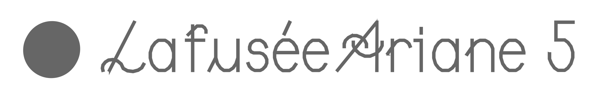
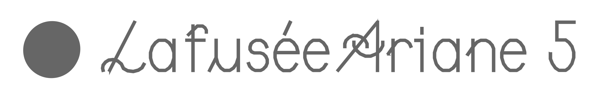
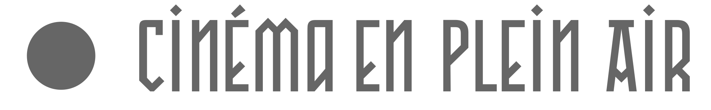
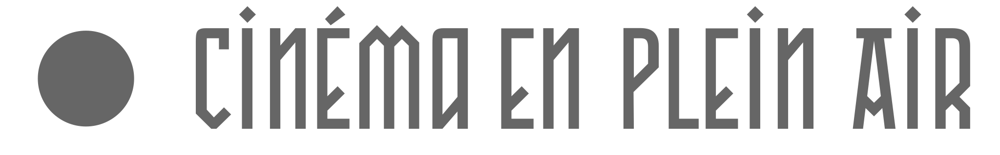
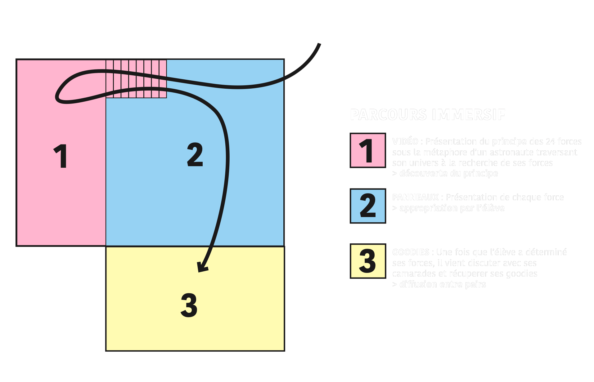
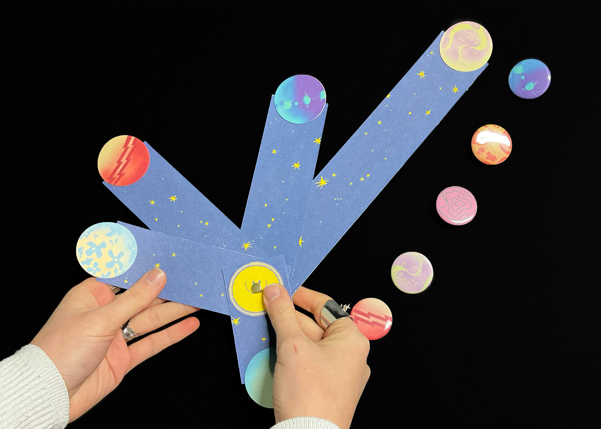
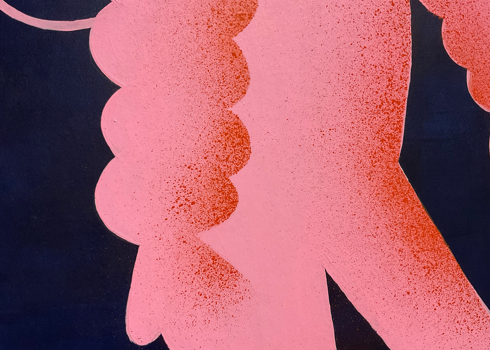
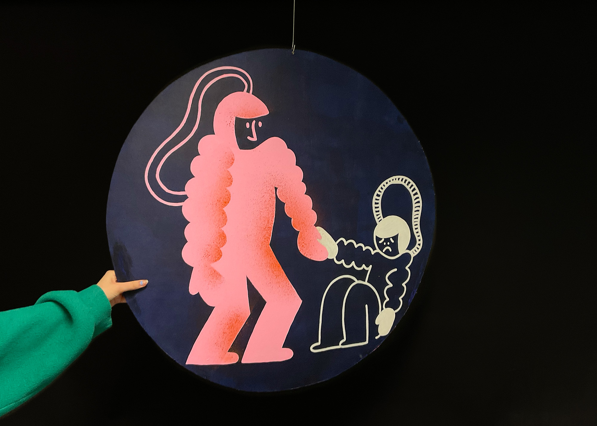
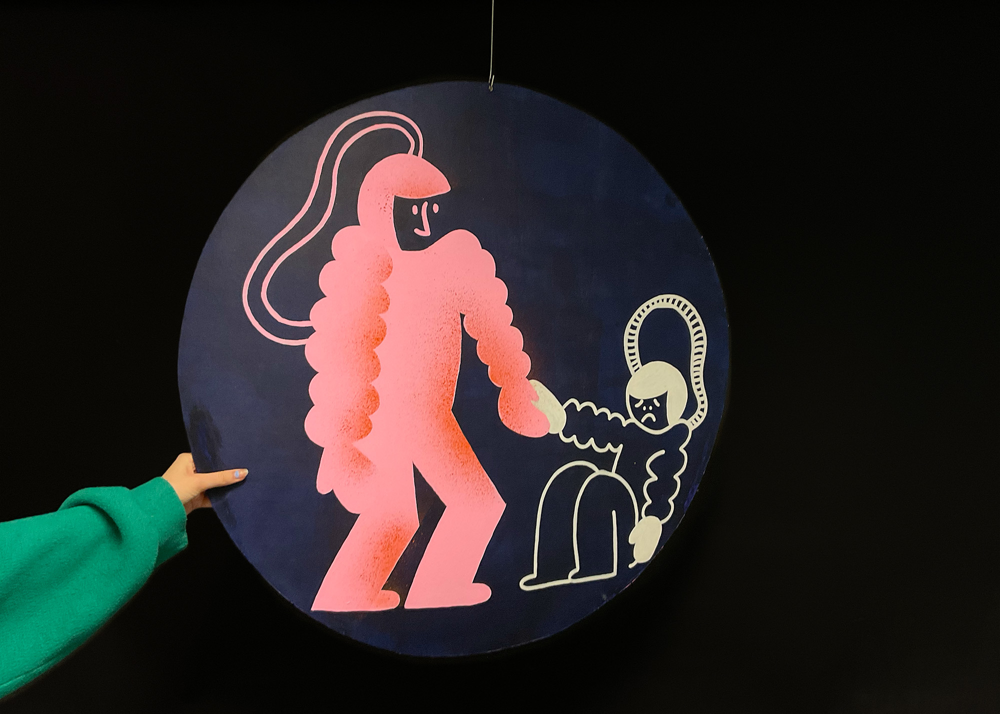

 



Le CRIPS nous a chargé de concevoir un système de communication au sein de l’ELMAD Auguste Renoir de Paris pour les lycéens. Le but était de leur faire connaître le principe des 24 forces, qu’ils s’en emparent et qu’ils le diffusent à leurs pairs.
Le principe affirme que nous possédons tous 24 forces intérieures, mais que nous en avons tous 5 prédominantes qui nous représentent et nous permettent d’avancer plus sereinement dans la vie en les ayant conscientisées. En binôme, nous avons choisi de comparer le fait de trouver ses 5 forces au fait d’aligner ses 5 planètes intérieures. Toute notre scénographie s’articule autour d’un univers onirique et spatial, dans un parcours en 3 salles.
   
